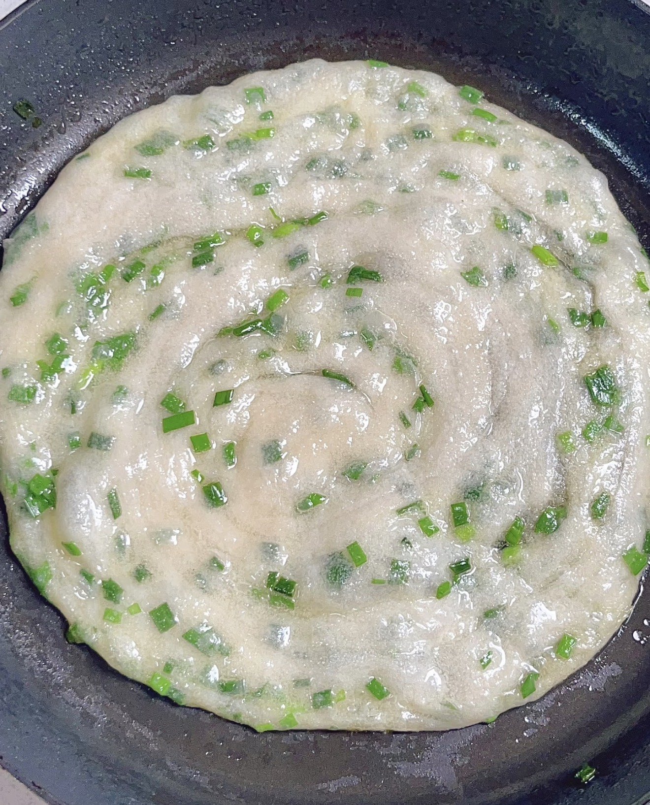

Scallion Pancake
葱油饼 — Crispy layered Chinese flatbread.
Ingredients
- 2 cups all-purpose flour
- 3/4 cup hot water
- 2–3 scallions, finely chopped
- 1/2 teaspoon salt
- 2 tablespoons vegetable oil (for dough layers)
- 2–3 tablespoons oil for pan frying
Directions
- In a large bowl, mix the flour with hot water slowly. Stir with chopsticks or a spoon until the dough starts to form.
- Knead the dough on a clean surface for about 5 minutes until smooth. Cover and let it rest for about 20 minutes.
- Divide the dough into 3 equal pieces and roll each piece into a thin circle.
- Brush a thin layer of oil on the surface, then sprinkle with salt and chopped scallions.
- Roll the dough into a long log, then coil it into a spiral shape and flatten gently.
- Roll the spiral again into a round pancake about 6–7 inches wide.
- Heat a pan over medium heat and add a small amount of oil.
- Cook the pancake for about 2–3 minutes on each side until golden brown and crispy.
- Remove from the pan, cut into wedges, and serve warm.